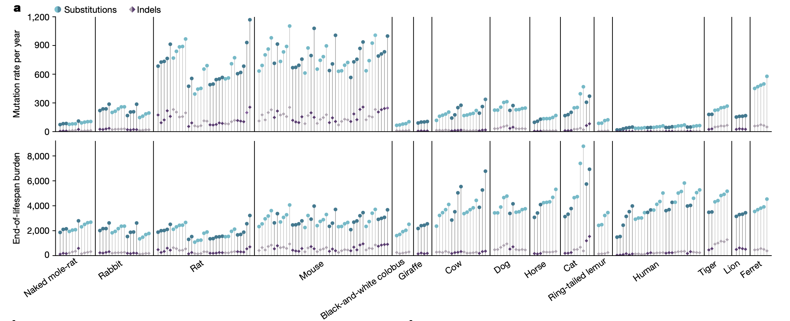
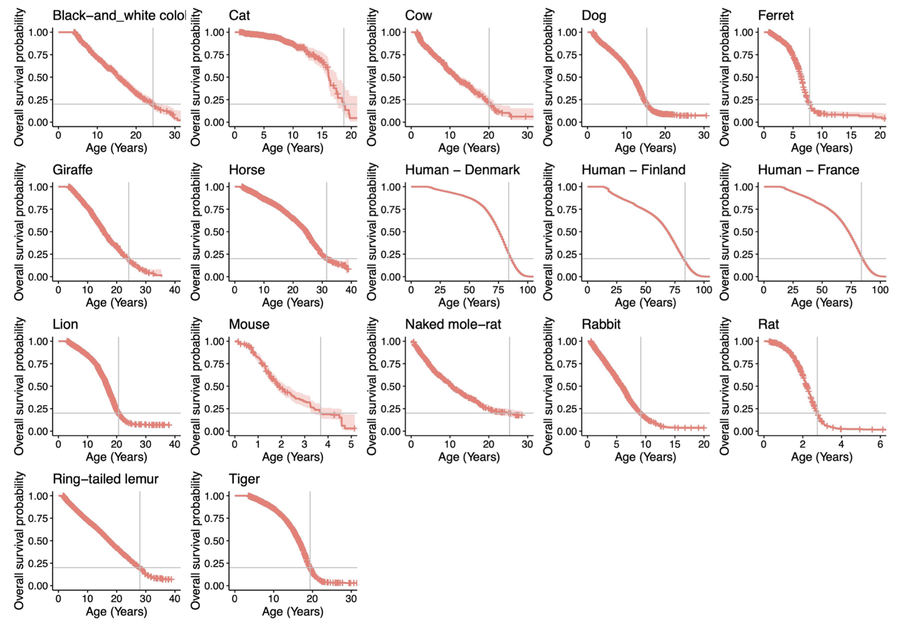
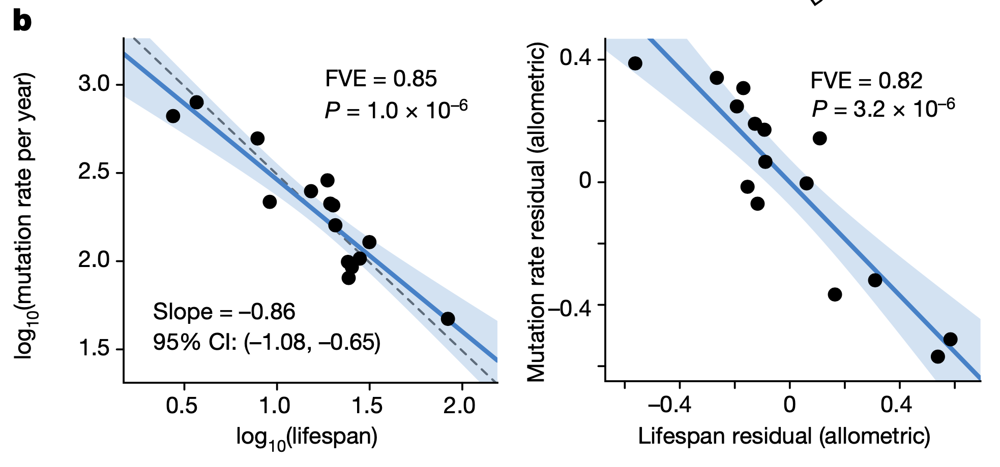
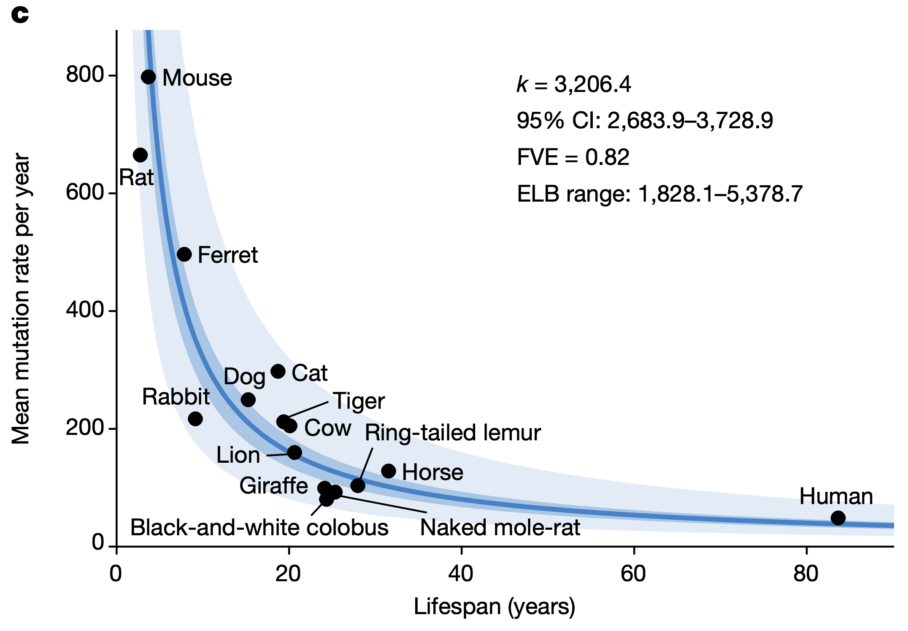
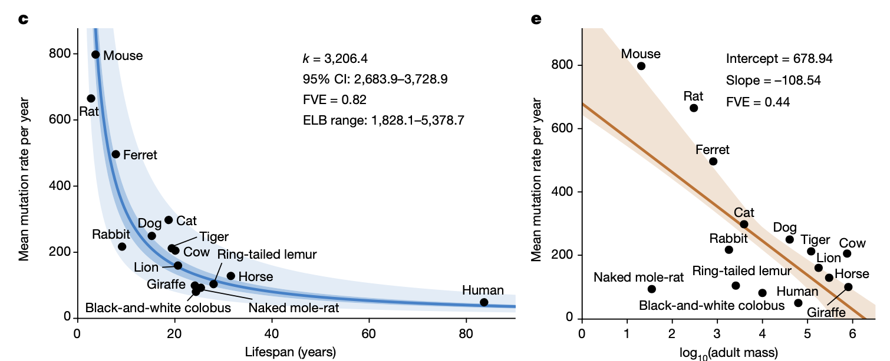

Correlation with life-history

- mutation rate per genome per year varied widely
- SNP: 47s/year in human👨👩👧👦 | 796s/year in mouse🐭
- Indel: 2.5~158 indels/year
Mutation rate ~ lifespan?
estimate lifespan

- lifespan = age at which 80% of individuals reaching adulthood have died
tight anticorrelation

rate ∝ 1/lifespan
somatic mutations at the end of the lifespan is similar in all species.
ELB: the end-of-lifespan burden
LME model

rate ∝ K/lifespan
K: mean estimated ELB across species = 3206.4
fold scale
| Vairable |
min |
max |
fold-change |
| Adult mass (g) |
20.50 |
800,000.00 |
39,024.39 |
| Lifespan (years) |
2.75 |
83.67 |
30.44 |
| Mutation rate per year (substitutions per genome) |
47.12 |
796.42 |
16.90 |
| End-of-lifespan burden (substitutions per genome) |
1,828.08 |
5,378.73 |
2.94 |

Giraffe🦒 VS naked mole-rat
[cows🐮, giraffes🦒, horses🐎] vs human👨👩👧👦
larger body size may have relied on alternative or additional strategies to limit cancer risk